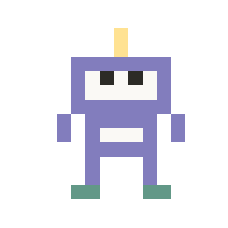
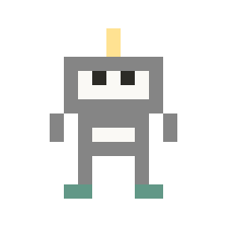

Agent J
还没有消息
这件事要在电脑上处理
只扫你自己眼前那台设备上的码。别人发来的码，不要扫。
设备自报的名字，未核实
看那台设备的屏幕：6 位数和这里一样，才点「一致」。
回复卡名字下面这条线。一段亮色（浅色）在线上来回滑；滑得越快，说明你的电脑越忙：快的时候可以等一等再发，慢的时候随时发。
电脑上的 Agent J 还没报告用量
你可以：
还没配对
还没有消息

这个浏览器清掉了本机保存的配对数据（比如无痕浏览的标签页关掉了，或者浏览器清理了网站数据）。电脑没有移除这台手机。在电脑上运行 agentj pair，重新配对一次就好；iPhone 上别用无痕浏览，最好添加到主屏幕，从图标打开。
这是另一台设备的配对码，要用已经配对好的 Agent J 来扫：打开它，点右上角的扫码图标。
好友页要在已经配对的手机或浏览器上打开。先在下面配对这台手机，配好后会自动打开好友页。
Agent 在你的电脑上干活，这台设备就是它的遥控器。不用注册登录：下面的方法任选一种，配好一次，以后打开就能用。
适合：你已经有一台配好的手机或浏览器。最省事，不用碰电脑。
适合：第一次配对，或者手边没有配好的遥控器。每个人都能用。
agentj pair
终端在哪：macOS 打开「终端」（Terminal）；Windows 打开 PowerShell 或 Windows Terminal；Linux 打开「终端」。iPhone 要先把这个网页添加到主屏幕，再从主屏幕打开它，点这里的「扫二维码」来配对；也可以粘贴链接。系统相机打开的是另一份 Safari 网页。
在电脑的终端里运行这条命令，终端会打印一个以 https:// 开头的配对链接。把它复制到这台设备上，粘贴到下面，再点「开始配对」。
agentj pair --link
适合：电脑已经加入 Agent J 账号。不用碰终端，用通行密钥（passkey）确认。
换了浏览器、清了网站数据，或者关掉了无痕窗口：只要当时保存过 Face ID，验一下就能连回电脑，不用重新配对。
把配对二维码放进画面，点「扫描」。
选个模型，或者通过加密密钥卡更新服务商的 Key。

对照码
------
在电脑上输入这 6 位数字，回车，再输入你的批准口令。
这串数字只显示在手机上。电脑批准后，这里会自动进入对话。
你已绑定的手机或电脑浏览器上会弹出一张确认卡，卡上显示同一串数字。核对一致，在那边点「确认」。
这里不用输入任何东西。确认后自动进入对话；5 分钟内没人确认，这次申请就作废。
这些步骤在电脑上做；手机上看进度。卡住了直接在聊天里告诉我。
这些是 Agent 每次开工都会读的记忆，存在你的电脑上。可以逐条删除：删掉的内容先进电脑上的回收站，7 天内可以撤销。
这些记录存在你的电脑上，保留 30 天。
这些是 Agent 可以按时自动做的事。启用哪个由你决定；任务改过之后，要重新启用。
这些是电脑上原本就有的定时任务，是自动读到的。这里只能看，不能修改或删除。

电脑不再认这台手机。要继续用，先在电脑上运行 agentj pair，再重新配对。
没发出去的草稿、输入记录和加密它们的密钥，都已从这台手机上删除。
完全连不上时，写信到 feedback@agentj.app，附上账号 ID、发生了什么和截图。
Agent J 还能回话时：直接告诉它「我要反馈一个问题」，它会用内置客服 agentj support 帮你报告。
完全连不上时，写信到 feedback@agentj.app，附上账号 ID、发生了什么和截图。
本页的版本号（用来核对网页有没有被改过）：
—
怎么核对、我们存了什么，都写在「数据安全」页：agentj.app/security/
这台手机一次只配对一台电脑。给 Agent 改名：在电脑上运行 agentj name <新名字>。你所有的 Agent 都能在账号后台看到。
Agent 空闲一段时间后会自己醒来，看看后台任务和你的待办；没事就不打扰你。每次心跳都会用掉一次模型调用。
只有这一个语言设置：App 界面、发给你的邮件、Agent J 跟你说话，都用它。改了以后，电脑和账号会自动同步。
这台电脑上的程序还不能从手机改设置。要改，在电脑上运行：
只改回复卡片里的字，只存在这台手机上。
发消息时「嗖」的那一声。它跟着手机的媒体音量走，不是铃声音量，所以调低铃声没用；嫌响就在这里调小，拉到最左就是静音。只存在这台手机上。
每条新回复一到就自动读出来。
说出唤醒词就能开始说话。只在 Agent J 的安卓 App 里起作用，网页版没有这个功能。
这台电脑上的程序还不能从手机改设置。要改，在电脑上运行：
在电脑上截图（截到剪贴板的那种，比如 Windows 的 Win+Shift+S）后回到这个页面，截图会自动放进附件，等你点发送。打开时浏览器会问一次能不能读剪贴板。手机浏览器不支持。
额外高危提醒默认是关着的。你可以在这儿开关；底层工具自身的权限规则一直生效。
配置 Jev（电脑上的 OPENROUTER_API_KEY）后可以少弹审批卡：Agent J 看不清的命令会先问 Jev 是否与当前任务一致，概率不低于这个值就直接放行，并记进记录。调低弹窗更少，调高更谨慎（0.50–0.95，默认 0.70）。花钱、删除、对外发送、改凭据、改价这五类明确危险的动作不受影响，一律弹卡。
用 /goal 交代好一件事后，授权范围外、电脑能撤回的动作（git 里有提交、移到回收站、推到已有的远端）会弹 10 秒倒计时卡，你不点就算同意，好让目标在你睡觉或开会时也能做完。不可逆的和疑似攻击的永远等你决定。公司或团队用的话可以关掉：关掉后这些卡只会等你点。
本机登录了不止一个 AI 账号（比如 Claude Code 和 Codex）时：当前这个的 5 小时额度到 80% 或周额度到 90%，新开始的定时任务 / 工作流会先跟另一个额度还宽裕的账号握一次手，能用就直接交给它，消息里写一句改用了谁。关着的话（默认）只在手机上问你「切到 X 做这件？」，你同意才切。主对话不会被切走；工作流写明只能用某个 AI 的不受影响。
默认用独立会话：Agent J 自己开一个，不改你终端里的工具。共享（高级）会接入你电脑上正在用的会话，沿用它的权限。
只管 Agent J 自己启动的 Agent（独立会话和定时任务）：它们在隔离环境里跑，看不到 Agent J 的密钥和配对数据。关掉后，就按底层工具自身的权限来。下次启动 Agent 时生效。
依附于隔离运行，只对隔离中的 Agent 生效。默认关闭；开启后它们可以使用 docker / podman，容器能挂载电脑上的任何文件。
隔离运行已关闭，这一项暂时不生效。
自动：有新版时，等电脑闲下来再升级——没有在跑的任务、没有待处理的卡片、30 分钟没用手机，夜里 3–5 点优先。先问我：有新版只告诉你，什么时候升由你决定。
紧急安全修复会立即升级，并告诉你原因。
先列出升级会打断的事，你确认了再升；没有要打断的就直接升级。
网页版升级以后，点这里拉取新版本、清掉旧缓存，再重新打开。
添加以后，打开它就像打开一个 App，也能收到锁屏提醒。
遇到问题，直接告诉 Agent J「我要反馈一个问题」。它会先给你看要发出去的内容，你同意了才发。
完全连不上时，写信到 feedback@agentj.app，附上账号 ID、发生了什么和截图。
 我们看不到你的聊天内容。
我们看不到你的聊天内容。
给 Agent 一个邮箱（建议专门注册一个），在下面填好白名单。只有白名单里、而且通过发件人校验的邮件才会交给 Agent；其他邮件只计数，Agent 看不到。
点「设置邮箱授权码」，按服务商提示获取并粘贴。密码加密保存到 Agent J 工作主机后自动测试连接，不发信。
白名单是空的：现在任何邮件都不会交给 Agent。先把你自己常用的邮箱加进来。
「我本人」的邮件按你的指令处理；「访客」的邮件不当作你的指令，不能批准任何操作，回信会去掉私人信息。白名单里的人，Agent 给他们发信不用你再确认；加进来之前想清楚：Agent 可以不经你确认给他发信。
关闭后，别人只要冒充白名单里的地址发信，就能把内容交给 Agent。只在你的邮箱服务商不写校验结果时才这样用。
电脑上的 Claude Code / Codex 订阅登录过期时，Agent 就回不了话。在这里点「重新登录」：电脑运行官方登录命令，把授权链接或设备码发到手机；你在任何一台登录了该账号的设备上完成授权，新凭据只存在电脑上。之后电脑自动重启 AI、检查没有卡在任何确认界面、发一条测试消息拿到回复，才显示「已恢复」。
如果只是余额或额度不够，到服务商网站充值就行，不需要重新登录。
开始救援需要主人的通行密钥确认；授权码和 token 只在密钥卡里填写，端到端加密直达电脑，不会出现在聊天、日志或中继里。
Agent J 定时看一眼这台 Mac 上新的 iMessage 和短信，验证码、快递、银行、行程、家人的消息推到这台手机，垃圾和骗人的短信挡掉。它只读：不会回复、不标已读、不改「信息」里的任何东西。
还差一步，要在电脑上做：打开 系统设置 → 隐私与安全性 → 完全磁盘访问权限，把下面这个程序加进去并打开开关，然后回来点「重新检测」。macOS 不会自己弹窗问你。
要授权的程序：
免打扰时段里的提醒攒进摘要，时段结束时一起发；验证码和重要联系人照常马上推。
群聊只进摘要，不会马上推。
关掉时，短信正文不出这台电脑。打开时，只有规则拿不准的短信，去掉号码、邮箱、链接后交给 Jev；验证码永远不会交给任何模型。Jev 用你电脑上已有的 OpenRouter Key，没有 Key 或者出错时这条照样进摘要，不会丢。
规则、重要联系人和静音名单由 Agent J 帮你改：点下面的按钮，在聊天里用一句话告诉它。
通讯录还是空的。点上面的加号新增，或者导入手机导出的 vCard / CSV 文件。
「加入邮件白名单」把这个人的邮箱加进「邮件通道」的白名单（访客身份）：他发来的邮件会交给 Agent J，但不当作你的指令。你自己的那一条（0 号位）点开就是「我的联系方式」。
已用遥控器
0/10
电脑上的程序还不支持在手机上管理遥控器，这里只能查看。要添加、改名或解绑，在电脑上运行 `agentj pair`、`agentj devices` 或 `agentj revoke <设备>`。